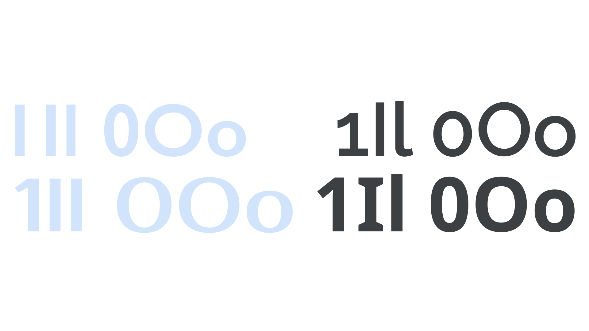

Legibility
By Google Fonts Knowledge contributors · Google Fonts Knowledge.
Original article · Source on GitHub · CC BY-SA 4.0. Text, illustrations and existing credits reproduced from the licensed Knowledge repository. Open Shelf adapted the layout and links; these adaptations are also CC BY-SA 4.0. No endorsement implied.
Legibility describes how a typeface’s glyphs can be correctly identified as characters and words, including how individual characters can be distinguished from one another. Legibility should not be confused with readability, although legibility does affect readability.

Some typefaces are inherently more legible than others, such as those with distinct shapes for “1,” capital “I,” and lowercase “l” (1Il); or “0”, capital “O,” and lowercase “o” (0Oo). Still, the typography of the text (for example, choices of foreground and background color, font size, weight, and tracking) will influence the legibility.
Legibility is a necessary prerequisite to readability; by affecting legibility, these factors also affect the readability of any type. A typeface rendered at a very small size will not be legible or readable. Increasing the font size will eventually make it legible, but it may not make it readable. For example, people may be able to read the text, but not comfortably—such as in a dense block of legal “small print.”
When the spacing between characters in a font is more open, it will be more legible, because that reduces crowding. You can add more space with tracking, and small optical sizes have more spacing and other optimizations built-in to increase their legibility. Some typefaces are designed to achieve extremely high legibility, such as monospaced fonts, or the typefaces used for car number plates.